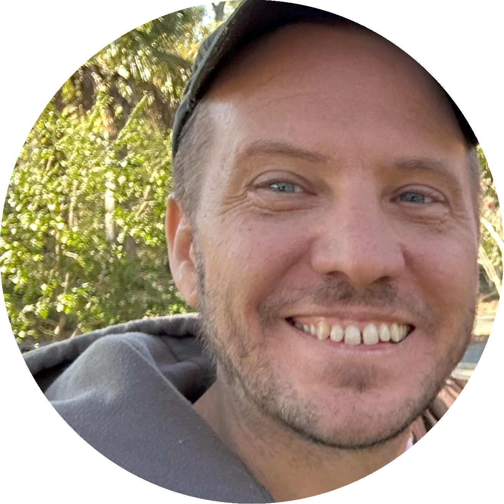

🗓️ September 14, 2026 · 09:00 – 17:00 CDT 🏨 Hilton Americas-Houston · 1600 Lamar Street, Houston, TX 📝 Workshop Registration
Description
Modern clinical reporting workflows are evolving fast, and this workshop helps you keep pace with a practical, end-to-end approach in R. You’ll learn how to move from raw data to analysis deliverables using Pharmaverse tools, including standards-aligned SDTM preparation, efficient creation of ADaM datasets, and generation of high-quality tables, listings, and graphs (TLGs) supported by Analysis Results Datasets (ARDs). You’ll also see where AI-assisted tooling can fit naturally into the workflow to support faster iteration and reduce manual rework, without sacrificing transparency, reproducibility, or reviewability. Leave with a modular, reusable playbook for applying R to every stage of clinical reporting across your team.
Schedule
| Time | Activity |
|---|---|
| 09:00 – 09:45 | Introduction to Pharmaverse and AI Agents |
| 09:45 – 10:30 | SDTM with sdtm.oak |
| 10:30 – 11:00 | Coffee Break |
| 11:00 – 12:30 | ADaMs with {admiral} and friends |
| 12:30 – 13:30 | Lunch |
| 13:30 – 14:15 | Analysis Results Datasets |
| 14:15 – 15:00 | Create Tables with {gtsummary} |
| 15:00 – 15:30 | Coffee Break |
| 15:30 – 16:15 | Create Tables with {tfrmt} |
| 16:15 – 17:00 | Other Topics Overview + Wrap-up |
Pre-work
Instructors
Executive Director of Data Sciences & Clinical Data Analytics, Kardigan (he/him)
Daniel leads the Data Science and Clinical Analytics groups at Kardigan. Previously was a Senior Principal Innovation Data Scientist and Real-time Analytics Group Lead at Genentech, a Lead Data Science Manager at the Prostate Cancer Clinical Trials Consortium, and an academic biostatistician at Memorial Sloan Kettering Cancer Center for 13 years. He enjoys R package development, creating many packages on CRAN, R-Universe, and GitHub. He’s a co-organizer of rainbowR and of the R Medicine Conference, and a recipient of the Brian Bole Award for Excellence from Open Source in Pharma and the ASA Innovation in Programming Award.

Becca Krouse
Data Scientist, GSK Data Science Innovation & Engineering
Becca focuses on enabling users across Biostatistics. A biostatistician by training, she has experience spanning 15 years in the field of clinical research and specializes in developing R-based tools.

Ben Straub
Senior Manager Statistical Data Scientist, Praxis Precision Medicines
Ben Straub is a Senior Manager Statistical Data Scientist at Praxis Precision Medicines. He has worked in the industry for 8 years and is always actively involved with internal and external initiatives around R Adoption activities for Clinical Reporting and beyond. Ben is actively helping to develop and maintain an end-to-end R package pipeline (pharmaverse) that addresses all the needs of Clinical Reporting with many awesome companies and individuals. He is very excited for the future of using R and open source within Pharma.
Magdalena Krochmal (Magda)
Senior Real-Time Visual Analytics Specialist, Roche
Magda has over a decade of experience bridging advanced data engineering and user-centered application design. With a strong focus on clinical submission innovations, she is actively involved in the development and implementation of the SDTM automation project, {roak}. Magda leverages her expertise in R, Shiny, and AI-driven workflows to engineer intuitive medical data review tools, translating complex clinical data into high-impact, interactive visual analytics.